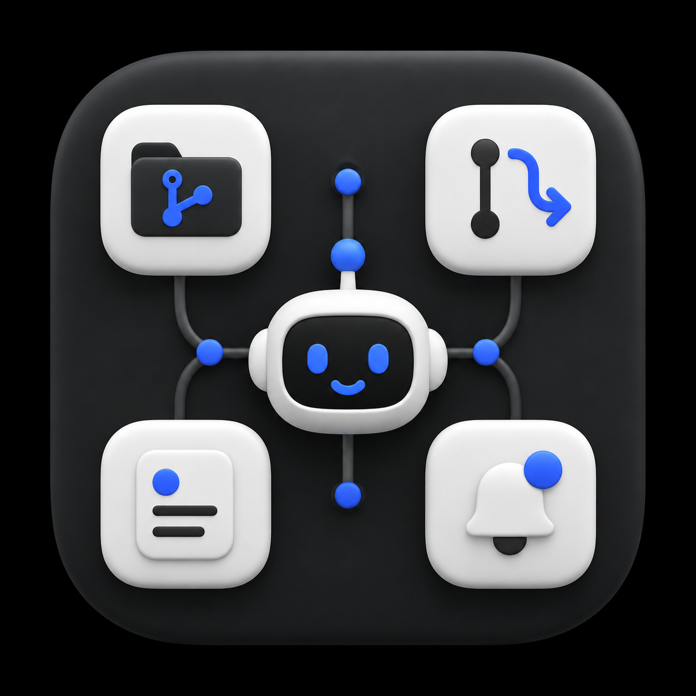

Your private, local AI for GitHub — repos, issues, pull requests, and notifications.
Ollama runs GitHub tools on this machine. Chat history and GitHub tokens stay on your device.
Repos, issues, pull requests, code, and notifications in a single chat — with optional web search.
Embedded SQLite database — no PostgreSQL required. Download, sign in, and start chatting.
Connect with a GitHub OAuth App, then ask the agent to work against your account.